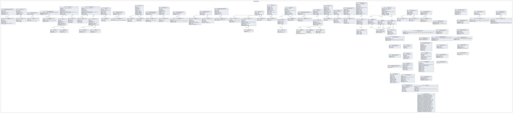
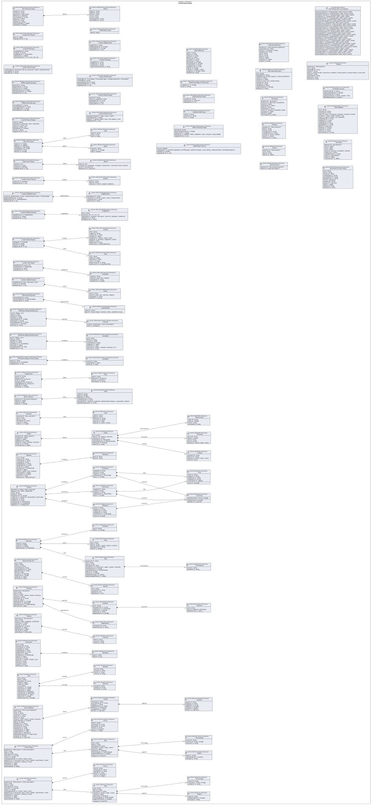

UML — cat-harness/schemas
Generated by cat-harness-tools/scripts/gen-uml-overview.ts — do not edit. The schemas sub-graph of cat-harness (cat-harness/schemas), with every attribute read from its node schema.
Sources (same model): PlantUML · Mermaid · Graphviz DOT


The interactive view lays this diagram out in your browser with Graphviz, and needs JavaScript. Without it, pick Portrait or Landscape, or read the DOT source.
| sub-graph | directory | graph typologies | node schema | nodes | cohesion | in | out |
|---|---|---|---|---|---|---|---|
cat-harness/schemas | cat-harness/schemas | schemas, cat-harness | schema: skills/ask-the-person/input.schema.json; schema: skills/ask-the-person/output.schema.json; schema: skills/bean-drain/input.schema.json; schema: skills/bean-drain/output.schema.json; schema: skills/bpmn-authoring/input.schema.json; schema: skills/bpmn-authoring/output.schema.json; schema: skills/content-author/input.schema.json; schema: skills/content-author/output.schema.json; schema: skills/content-feedback/input.schema.json; schema: skills/content-feedback/output.schema.json; schema: skills/content-plan/input.schema.json; schema: skills/content-plan/output.schema.json; schema: skills/content-publish/input.schema.json; schema: skills/content-publish/output.schema.json; schema: skills/content-review/input.schema.json; schema: skills/content-review/output.schema.json; schema: skills/content-test/input.schema.json; schema: skills/content-test/output.schema.json; schema: skills/content-validate/input.schema.json; schema: skills/content-validate/output.schema.json; schema: skills/crdm-detect/input.schema.json; schema: skills/crdm-detect/output.schema.json; schema: skills/dmn-authoring/input.schema.json; schema: skills/dmn-authoring/output.schema.json; schema: skills/staging-review/input.schema.json; schema: skills/staging-review/output.schema.json; schema: skills/wireframe-design-review/input.schema.json; schema: skills/wireframe-design-review/output.schema.json; schema: skills/wireframe-viewport-check/input.schema.json; schema: skills/wireframe-viewport-check/output.schema.json; schema: staging-comparison.schema.json; schema: kinds/bean-defs.schema.json; schema: kinds/binary-release.schema.json; schema: kinds/board-positions.schema.json; schema: kinds/boards.schema.json; schema: kinds/code-list.schema.json; schema: kinds/fsh-guts.schema.json; schema: kinds/health.schema.json; schema: kinds/memory.schema.json; schema: kinds/policies.schema.json; schema: kinds/qa-report.schema.json; schema: kinds/scenarios.schema.json; schema: kinds/sme-case-verdict.schema.json; schema: kinds/substrate-snapshot.schema.json; schema: kinds/test-data-fixed.schema.json; schema: kinds/test-data-generated.schema.json; schema: kinds/test-plan.schema.json; schema: kinds/test-report.schema.json; schema: kinds/themes.schema.json; schema: kinds/todo-feedback.schema.json; schema: kinds/todo-items.schema.json; schema: kinds/tools.schema.json; schema: kinds/translation-sources.schema.json; schema: kinds/vocab-mapping.schema.json; schema: kinds/voice-vendors.schema.json; schema: kinds/voices.schema.json; schema: kinds/waiver.schema.json; ext: JSON Schema 2020-12 | 322 | 0.54 | 356 | 3 |
Nodes, cohesion, in and out are the detangler’s pinned measurements for the same directory (bun run cat kg:detangle; skill graph-detanglement). Not measured means the detangler does not scan that directory, not that it has no edges.
Sub-graphs
The same model, drawn by Mermaid
Kept so the page renders even where the PlantUML image is missing, and because Mermaid nodes carry the CSS class that colours them from uml.css.
classDiagram
direction TB
namespace cat_harness__schemas {
class cat_harness_schemas_skills_ask_the_person_input_schema_json_Option["Option"] {
<<schema: skills/ask-the-person/input.schema.json>>
letter [1] string
label [1] string
does [1] string
pro [1] string
con [1] string
downstream [1] string
reversibility [1] string
}
class cat_harness_schemas_skills_ask_the_person_input_schema_json_Ask_The_Person_Input["Ask The Person Input"] {
<<schema: skills/ask-the-person/input.schema.json>>
decides [1] string
context [1] string
glossary [1] map~string~
options [2..*] Option[]
recommends [1] string
because [1] string
ifSilent [1] string
question [1] string
othersPending [1] integer
reversible [1] boolean
}
class cat_harness_schemas_skills_ask_the_person_output_schema_json_Ask_The_Person_Output["Ask The Person Output"] {
<<schema: skills/ask-the-person/output.schema.json>>
asked [1] object
outcome [1] answered | silent | dismissed
chosen [1] string | null
quote [1] string | null
defaultTaken [1] boolean
rule [0..1] string
stagingLinks [0..1] any
}
class cat_harness_schemas_skills_bean_drain_input_schema_json_Copy["Copy"] {
<<schema: skills/bean-drain/input.schema.json>>
repo [1] string
ref [1] string
defs [1] string
}
class cat_harness_schemas_skills_bean_drain_input_schema_json_Agent["Agent"] {
<<schema: skills/bean-drain/input.schema.json>>
name [1] string
authors [1..*] string[]
self [1] boolean
}
class cat_harness_schemas_skills_bean_drain_input_schema_json_Bean_Drain_Input["Bean Drain Input"] {
<<schema: skills/bean-drain/input.schema.json>>
copies [1..*] Copy[]
agents [1..*] Agent[]
holdings [1] map~any[]~
windowHours [1] integer
queueFile [1] string
repos [0..*] string[]
}
class cat_harness_schemas_skills_bean_drain_output_schema_json_Result["Result"] {
<<schema: skills/bean-drain/output.schema.json>>
bean [1] any
outcome [1] completed | scrapped | asked-owner | returned-to-todo | blocked
prs [0..*] string~uri~[]
question [0..1] string~uri~
}
class cat_harness_schemas_skills_bean_drain_output_schema_json_Bean_Drain_Output["Bean Drain Output"] {
<<schema: skills/bean-drain/output.schema.json>>
queue [1] any
checks [0..*] any[]
results [0..*] Result[]
stagingLinks [0..1] any
}
class cat_harness_schemas_skills_bpmn_authoring_input_schema_json_BPMN_Authoring_Input["BPMN Authoring Input"] {
<<schema: skills/bpmn-authoring/input.schema.json>>
processName [1] string
sourceWorkflow [0..1] string
existingBpmn [0..1] string
participants [0..*] string[]
}
class cat_harness_schemas_skills_bpmn_authoring_output_schema_json_BPMN_Authoring_Output["BPMN Authoring Output"] {
<<schema: skills/bpmn-authoring/output.schema.json>>
bpmnFile [1] string
diagramFile [0..1] string
taskCount [0..1] integer
gatewayCount [0..1] integer
participantCount [0..1] integer
stagingLinks [0..1] any
}
class cat_harness_schemas_skills_content_author_input_schema_json_Content_Author_Input["Content Author Input"] {
<<schema: skills/content-author/input.schema.json>>
contentType [1] document | fhir-ig | lean-proof | bpmn | data-dictionary
sourceRef [0..1] string
outputDir [0..1] string
}
class cat_harness_schemas_skills_content_author_output_schema_json_Artifact["Artifact"] {
<<schema: skills/content-author/output.schema.json>>
path [1] string
type [1] string
status [0..1] draft | ready-for-validation
}
class cat_harness_schemas_skills_content_author_output_schema_json_Content_Author_Output["Content Author Output"] {
<<schema: skills/content-author/output.schema.json>>
artifacts [0..*] Artifact[]
stagingLinks [0..1] any
}
class cat_harness_schemas_skills_content_feedback_input_schema_json_FeedbackItem["FeedbackItem"] {
<<schema: skills/content-feedback/input.schema.json>>
description [1] string
severity [0..1] critical | major | minor | enhancement
component [0..1] string
reporter [0..1] string
}
class cat_harness_schemas_skills_content_feedback_input_schema_json_Content_Feedback_Input["Content Feedback Input"] {
<<schema: skills/content-feedback/input.schema.json>>
source [1] github-issues | survey | implementation-report | clinical-review
publishedVersion [0..1] string
feedbackItems [0..*] FeedbackItem[]
stagingLinks [0..1] any
}
class cat_harness_schemas_skills_content_feedback_output_schema_json_TriagedItem["TriagedItem"] {
<<schema: skills/content-feedback/output.schema.json>>
id [1] string
priority [1] P0 | P1 | P2 | P3
disposition [1] backlog | next-sprint | wont-fix | duplicate | needs-info
assignee [0..1] string
linkedIssue [0..1] string
}
class cat_harness_schemas_skills_content_feedback_output_schema_json_Content_Feedback_Output["Content Feedback Output"] {
<<schema: skills/content-feedback/output.schema.json>>
triagedItems [0..*] TriagedItem[]
summary [0..1] object
stagingLinks [0..1] any
}
class cat_harness_schemas_skills_content_plan_input_schema_json_Content_Plan_Input["Content Plan Input"] {
<<schema: skills/content-plan/input.schema.json>>
projectName [1] string
scope [0..1] string
targetDate [0..1] string~date~
teamSize [0..1] integer
sprintDuration [0..1] 1w | 2w | 3w | 4w
}
class cat_harness_schemas_skills_content_plan_output_schema_json_Content_Plan_Output["Content Plan Output"] {
<<schema: skills/content-plan/output.schema.json>>
plan [1] object
stagingLinks [0..1] any
}
class cat_harness_schemas_skills_content_publish_input_schema_json_Content_Publish_Input["Content Publish Input"] {
<<schema: skills/content-publish/input.schema.json>>
versionIncrement [1] major | minor | patch
releaseNotes [0..1] string
target [0..1] github-release | npm | fhir-registry | arxiv
stagingLinks [0..1] any
}
class cat_harness_schemas_skills_content_publish_output_schema_json_Content_Publish_Output["Content Publish Output"] {
<<schema: skills/content-publish/output.schema.json>>
version [1] string
status [1] published | failed
publishedUrl [0..1] string
releaseTag [0..1] string
stagingLinks [0..1] any
}
class cat_harness_schemas_skills_content_review_input_schema_json_Content_Review_Input["Content Review Input"] {
<<schema: skills/content-review/input.schema.json>>
reviewType [1] l2-to-l3-gate | l3-to-publish-gate | change-assessment | final-signoff
contentRef [1] string
previousVersion [0..1] string
validationReport [0..1] string
stagingLinks [0..1] any
}
class cat_harness_schemas_skills_content_review_output_schema_json_Finding["Finding"] {
<<schema: skills/content-review/output.schema.json>>
id [1] string
subject [1] string
criterion [0..1] string
reviewer [1] object
severity [0..1] critical | major | minor
weight [0..1] blocking | suggestion | praise
detail [1] string
evidence [0..*] any[]
raised_at [0..1] string~date-time~
}
class cat_harness_schemas_skills_content_review_output_schema_json_Note["Note"] {
<<schema: skills/content-review/output.schema.json>>
id [1] string
author [1] object
rationale [1] string
cites [1..*] any[]
proposed_by [0..1] string
written_at [0..1] string~date-time~
}
class cat_harness_schemas_skills_content_review_output_schema_json_Content_Review_Output["Content Review Output"] {
<<schema: skills/content-review/output.schema.json>>
findings [0..*] Finding[]
decision [1] object
notes [0..*] Note[]
stagingLinks [0..1] any
}
class cat_harness_schemas_skills_content_test_input_schema_json_Content_Test_Input["Content Test Input"] {
<<schema: skills/content-test/input.schema.json>>
targetPath [1] string
testPlan [0..1] string
testData [0..1] string
regressionBaseline [0..1] string
}
class cat_harness_schemas_skills_content_test_output_schema_json_TestResult["TestResult"] {
<<schema: skills/content-test/output.schema.json>>
testId [1] string
status [1] pass | fail | skipped
message [0..1] string
duration [0..1] number
}
class cat_harness_schemas_skills_content_test_output_schema_json_Content_Test_Output["Content Test Output"] {
<<schema: skills/content-test/output.schema.json>>
overallStatus [1] pass | fail
testResults [0..*] TestResult[]
coverage [0..1] object
stagingLinks [0..1] any
}
class cat_harness_schemas_skills_content_validate_input_schema_json_Content_Validate_Input["Content Validate Input"] {
<<schema: skills/content-validate/input.schema.json>>
targetPath [1] string
validationRules [0..*] string[]
schemaRefs [0..*] string[]
stagingLinks [0..1] any
}
class cat_harness_schemas_skills_content_validate_output_schema_json_Result["Result"] {
<<schema: skills/content-validate/output.schema.json>>
rule [1] string
status [1] pass | fail | warning | skipped
message [0..1] string
location [0..1] string
}
class cat_harness_schemas_skills_content_validate_output_schema_json_Content_Validate_Output["Content Validate Output"] {
<<schema: skills/content-validate/output.schema.json>>
overallStatus [1] pass | warnings | errors
results [0..*] Result[]
stagingLinks [0..1] any
}
class cat_harness_schemas_skills_crdm_detect_input_schema_json_CRDM_Detect_Input["CRDM Detect Input"] {
<<schema: skills/crdm-detect/input.schema.json>>
text [1] string
}
class cat_harness_schemas_skills_crdm_detect_output_schema_json_CRDM_Detect_Output["CRDM Detect Output"] {
<<schema: skills/crdm-detect/output.schema.json>>
fires [1] boolean
categories [0..*] list~direct-capability | workflow-gap | platform-change | cross-cutting | review-surfaced | self-declared-genre~
excluded [1] boolean
stagingLinks [0..1] any
}
class cat_harness_schemas_skills_dmn_authoring_input_schema_json_InputVariable["InputVariable"] {
<<schema: skills/dmn-authoring/input.schema.json>>
name [1] string
type [1] string | integer | boolean | date | codeable-concept
}
class cat_harness_schemas_skills_dmn_authoring_input_schema_json_DMN_Authoring_Input["DMN Authoring Input"] {
<<schema: skills/dmn-authoring/input.schema.json>>
decisionName [1] string
inputVariables [0..*] InputVariable[]
sourceLogic [0..1] string
}
class cat_harness_schemas_skills_dmn_authoring_output_schema_json_DMN_Authoring_Output["DMN Authoring Output"] {
<<schema: skills/dmn-authoring/output.schema.json>>
dmnFile [1] string
decisionTableCount [0..1] integer
ruleCount [0..1] integer
hitPolicy [0..1] UNIQUE | FIRST | PRIORITY | ANY | COLLECT | RULE ORDER
stagingLinks [0..1] any
}
class cat_harness_schemas_skills_staging_review_input_schema_json_Staging_Review_Input["Staging Review Input"] {
<<schema: skills/staging-review/input.schema.json>>
ask [0..1] string
branch [0..1] string
pr [0..1] integer
}
class cat_harness_schemas_skills_staging_review_output_schema_json_Staging_Review_Output["Staging Review Output"] {
<<schema: skills/staging-review/output.schema.json>>
narrative [1] string
startHere [0..1] string~uri~
stagingLinks [1] any
}
class cat_harness_schemas_skills_wireframe_design_review_input_schema_json_Channel["Channel"] {
<<schema: skills/wireframe-design-review/input.schema.json>>
kind [1] conversation | issue | pull-request
url [0..1] string~uri~
}
class cat_harness_schemas_skills_wireframe_design_review_input_schema_json_Wireframe_Design_Review_Input["Wireframe Design Review Input"] {
<<schema: skills/wireframe-design-review/input.schema.json>>
use [1] design | as-is
topic [1] string
surface [1] string
intent [0..1] string
requirements [0..*] string[]
proposal [0..1] string
humanReviewer [0..1] string
channels [0..*] Channel[]
branch [0..1] string
}
class cat_harness_schemas_skills_wireframe_design_review_output_schema_json_Candidate["Candidate"] {
<<schema: skills/wireframe-design-review/output.schema.json>>
id [1] string
title [0..1] string
source [1] string
screenshots [1] object
staging [0..1] object
entries [0..*] any[]
outcome [1] chosen | rejected | pending | as-is
reason [0..1] string
}
class cat_harness_schemas_skills_wireframe_design_review_output_schema_json_Wireframe_Design_Review_Output["Wireframe Design Review Output"] {
<<schema: skills/wireframe-design-review/output.schema.json>>
use [1] design | as-is
topic [1] string
assetDir [1] string
intent [0..1] string
candidates [1..*] Candidate[]
chosen [0..1] object
changedAssets [0..*] any[]
stagingLinks [1] any
}
class cat_harness_schemas_skills_wireframe_viewport_check_input_schema_json_Wireframe_Viewport_Check_Input["Wireframe Viewport Check Input"] {
<<schema: skills/wireframe-viewport-check/input.schema.json>>
candidates [1..*] string[]
out [0..1] string
}
class cat_harness_schemas_skills_wireframe_viewport_check_output_schema_json_Candidate["Candidate"] {
<<schema: skills/wireframe-viewport-check/output.schema.json>>
source [1] string
screenshots [1] object
entries [0..*] any[]
}
class cat_harness_schemas_skills_wireframe_viewport_check_output_schema_json_Wireframe_Viewport_Check_Output["Wireframe Viewport Check Output"] {
<<schema: skills/wireframe-viewport-check/output.schema.json>>
report [1] string
candidates [0..*] Candidate[]
stagingLinks [0..1] any
}
class cat_harness_schemas_staging_comparison_schema_json_Page["Page"] {
<<schema: staging-comparison.schema.json>>
title [1] string
before [0..1] string~uri~
after [0..1] string~uri~
summary [0..1] string
}
class cat_harness_schemas_staging_comparison_schema_json_Staging_links["Staging links"] {
<<schema: staging-comparison.schema.json>>
branch [1] string
slug [1] string
branchUrl [1] string~uri~
pr [0..1] integer
mainBaseUrl [1] string~uri~
stagingBaseUrl [1] string~uri~
pages [0..*] Page[]
missing [0..*] string[]
}
class cat_harness_schemas_kinds_bean_defs_schema_json_Bean_definitions["Bean definitions"] {
<<schema: kinds/bean-defs.schema.json>>
id [0..1] string
title [0..1] string
status [0..1] string
type [0..1] string
priority [0..1] string
parent [0..1] string
blocking [0..*] string[]
blocked_by [0..*] string[]
created_at [0..1] string
updated_at [0..1] string
tags [0..*] string[]
issue [0..1] integer | string
targets [0..1] string[] | string
$schema [1] string
}
class cat_harness_schemas_kinds_binary_release_schema_json_Asset["Asset"] {
<<schema: kinds/binary-release.schema.json>>
name [1] string
bytes [1] integer
digest [0..1] object
fetchedFrom [1] string
contentType [0..1] string
disposition [1] unknown | published | deleted-before-deploy | superseded | expired
dispositionReason [0..1] string
}
class cat_harness_schemas_kinds_binary_release_schema_json_Binary_releases["Binary releases"] {
<<schema: kinds/binary-release.schema.json>>
$schema [1] 'folio-binary-release/v1'
release [1] object
origin [1] object
assets [0..*] Asset[]
}
class cat_harness_schemas_kinds_board_positions_schema_json_Board_positions["Board positions"] {
<<schema: kinds/board-positions.schema.json>>
$schema [1] 'folio-board-positions/v1'
boards [1] map~map~object~~
}
class cat_harness_schemas_kinds_boards_schema_json_Boards["Boards"] {
<<schema: kinds/boards.schema.json>>
$schema [1] 'folio-board/v1'
id [1] string
title [1] string
filter [0..1] object
}
class cat_harness_schemas_kinds_code_list_schema_json_Code["Code"] {
<<schema: kinds/code-list.schema.json>>
code [1] string
label [1] string
definition [1] string
source [0..1] object
value [0..1] string
status [0..1] active | retired
}
class cat_harness_schemas_kinds_code_list_schema_json_Code_lists["Code lists"] {
<<schema: kinds/code-list.schema.json>>
$schema [1] 'folio-code-list/v1'
id [1] string
title [1] string
description [1] string
source [1] object
codes [1..*] Code[]
}
class cat_harness_schemas_kinds_fsh_guts_schema_json_FSH_guts["FSH guts"] {
<<schema: kinds/fsh-guts.schema.json>>
$schema [1] 'folio-fsh-guts/v1'
title [1] string
kind [1] string
movedOn [0..1] string
movedFrom [0..1] string
issue [0..1] string | number
bean [0..1] string
summary [0..1] string
}
class cat_harness_schemas_kinds_health_schema_json_Threshold["Threshold"] {
<<schema: kinds/health.schema.json>>
metric [1] string
value [1] number
unit [1] string
basis [1] string
severity [1] critical | major | minor
}
class cat_harness_schemas_kinds_health_schema_json_Measurement["Measurement"] {
<<schema: kinds/health.schema.json>>
metric [1] string
value [1] number
unit [1] string
command [1] string
}
class cat_harness_schemas_kinds_health_schema_json_Finding["Finding"] {
<<schema: kinds/health.schema.json>>
summary [1] string
metric [0..1] string
severity [1] critical | major | minor
action [1] string
}
class cat_harness_schemas_kinds_health_schema_json_Check["Check"] {
<<schema: kinds/health.schema.json>>
id [1] string
state [1] ok | finding | unknown
summary [1] string
thresholds [0..*] Threshold[]
measurements [0..*] Measurement[]
findings [0..*] Finding[]
reason [0..1] string
}
class cat_harness_schemas_kinds_health_schema_json_Health["Health"] {
<<schema: kinds/health.schema.json>>
$schema [1] 'health-report/v1'
producer [1] object
subject [1] object
updated_at [1] string
verdict [1] clean | findings | unknown
checks [1..*] Check[]
runContext [0..1] object
}
class cat_harness_schemas_kinds_memory_schema_json_AlsoAbout["AlsoAbout"] {
<<schema: kinds/memory.schema.json>>
kind [1] 'block'
label [1] string
}
class cat_harness_schemas_kinds_memory_schema_json_Memory["Memory"] {
<<schema: kinds/memory.schema.json>>
id [1] string
summary [1] string
comment [0..1] string
createdAt [1] string
updatedAt [0..1] string
targetLabel [0..1] string
anchor [0..1] object
alsoAbout [0..*] AlsoAbout[]
tags [0..1] object
label [1] stable | trap | baseline
measured [0..1] object
archived [0..1] boolean
detail [0..1] string
$schema [1] 'folio-memory/v1'
}
class cat_harness_schemas_kinds_policies_schema_json_Constraint["Constraint"] {
<<schema: kinds/policies.schema.json>>
leftOperand [1] enum(9)
operator [1] enum(18)
rightOperand [1] string | string[]
}
class cat_harness_schemas_kinds_policies_schema_json_Duty["Duty"] {
<<schema: kinds/policies.schema.json>>
uid [0..1] string
action [1] enum(8)
target [0..1] string
assigner [0..1] string
assignee [0..1] string
constraint [0..*] object[]
}
class cat_harness_schemas_kinds_policies_schema_json_Permission["Permission"] {
<<schema: kinds/policies.schema.json>>
assignee [1] string
action [1] string
target [0..1] string
constraint [0..*] Constraint[]
duty [1..*] Duty[]
}
class cat_harness_schemas_kinds_policies_schema_json_Prohibition["Prohibition"] {
<<schema: kinds/policies.schema.json>>
assignee [1] string
action [1] string
target [0..1] string
constraint [0..*] Constraint[]
duty [1..*] Duty[]
}
class cat_harness_schemas_kinds_policies_schema_json_Obligation["Obligation"] {
<<schema: kinds/policies.schema.json>>
uid [0..1] string
action [1] enum(8)
target [0..1] string
assigner [0..1] string
assignee [0..1] string
constraint [0..*] Constraint[]
}
class cat_harness_schemas_kinds_policies_schema_json_Policies["Policies"] {
<<schema: kinds/policies.schema.json>>
@context [1] string | any[] | map~any~
@type [1] Set | Offer | Agreement
uid [1] string
profile [1] string
inheritFrom [0..*] string[]
conflict [0..1] odrl:perm | odrl:prohibit | odrl:invalid
assigner [0..1] string
assignee [0..1] string
permission [0..*] Permission[]
prohibition [0..*] Prohibition[]
obligation [1..*] Obligation[]
}
class cat_harness_schemas_kinds_qa_report_schema_json_QA_reports["QA reports"] {
<<schema: kinds/qa-report.schema.json>>
$schema [1] 'qa-report/v1'
producer [1] dak-script | ig-publisher
source [1] object
toolchain [0..1] object
phase [1] string
timestamp [1] string
status [1] running | completed | failed
summary [1] object
details [1] object
runContext [0..1] object
}
class cat_harness_schemas_kinds_scenarios_schema_json_FormerName["FormerName"] {
<<schema: kinds/scenarios.schema.json>>
name [1] string
retiredOn [1] string
}
class cat_harness_schemas_kinds_scenarios_schema_json_Role["Role"] {
<<schema: kinds/scenarios.schema.json>>
persona [0..1] string
id [1] string
title [1] string
description [1] string
actorKinds [1..*] list~person | agent | system | external~
otherNames [0..*] string[]
formerNames [0..*] FormerName[]
skills [0..*] string[]
inherits [0..*] string[]
judgementOnly [0..1] boolean
requiredCapabilities [0..1] object
}
class cat_harness_schemas_kinds_scenarios_schema_json_Actor["Actor"] {
<<schema: kinds/scenarios.schema.json>>
id [1] string
title [1] string
kind [1] person | agent | system | external
description [0..1] string
roles [0..*] string[]
}
class cat_harness_schemas_kinds_scenarios_schema_json_Extension["Extension"] {
<<schema: kinds/scenarios.schema.json>>
role [1] string
skills [1..*] string[]
}
class cat_harness_schemas_kinds_scenarios_schema_json_Scenarios["Scenarios"] {
<<schema: kinds/scenarios.schema.json>>
name [1] string
roles [0..*] Role[]
actors [0..*] Actor[]
extensions [0..*] Extension[]
}
class cat_harness_schemas_kinds_sme_case_verdict_schema_json_SME_case_verdict_pairs["SME case/verdict pairs"] {
<<schema: kinds/sme-case-verdict.schema.json>>
id [1] string
dataSetRef [1] string
subjectKind [1] decision-support | indicator-definition
case [0..1] object
cohort [0..1] object
verdict [1] pass | fail | needs-revision
rationale [1] string
reviewer [1] object
reviewedAt [1] string
requirements [0..*] string[]
$schema [1] string
}
class cat_harness_schemas_kinds_substrate_snapshot_schema_json_Substrate_snapshots["Substrate snapshots"] {
<<schema: kinds/substrate-snapshot.schema.json>>
$schema [1] 'folio-substrate-snapshot/v1'
subscription [1] string
kind [0..1] substrate | content
repository [1] string
ref [1] string
file [1] string
raw [1] string
fixity [1] object
summary [1] object
note [0..1] string
}
class cat_harness_schemas_kinds_test_data_fixed_schema_json_Record["Record"] {
<<schema: kinds/test-data-fixed.schema.json>>
id [1] string
summary [0..1] string
payload [1] any
expected [0..1] any
}
class cat_harness_schemas_kinds_test_data_fixed_schema_json_Fixed_test_data_sets["Fixed test data sets"] {
<<schema: kinds/test-data-fixed.schema.json>>
id [1] string
title [1] string
version [1] string
contentType [1] string
specialisation [0..1] string
description [0..1] string
kind [1] 'fixed'
records [1..*] Record[]
citations [0..*] string[]
review [0..1] object
$schema [1] string
}
class cat_harness_schemas_kinds_test_data_generated_schema_json_Generated_test_data_recipes["Generated test data recipes"] {
<<schema: kinds/test-data-generated.schema.json>>
id [1] string
title [1] string
version [1] string
contentType [1] string
specialisation [1] string
description [0..1] string
kind [1] 'generated'
template [1] string
params [1] map~any~
seed [1] integer
sha256 [1] string
$schema [1] string
}
class cat_harness_schemas_kinds_test_plan_schema_json_Assertion["Assertion"] {
<<schema: kinds/test-plan.schema.json>>
id [1] string
type [1] required | informative
expectation [0..1] string
}
class cat_harness_schemas_kinds_test_plan_schema_json_TestCase["TestCase"] {
<<schema: kinds/test-plan.schema.json>>
id [1] string
description [0..1] string
assertions [1..*] Assertion[]
testData [0..*] object[]
feature [0..1] string
dependsOn [0..*] string[]
}
class cat_harness_schemas_kinds_test_plan_schema_json_Dependency["Dependency"] {
<<schema: kinds/test-plan.schema.json>>
description [1] string
predecessor [0..1] string
}
class cat_harness_schemas_kinds_test_plan_schema_json_Test_plan["Test plan"] {
<<schema: kinds/test-plan.schema.json>>
$schema [1] 'test-plan/v1'
id [1] string
title [1] string
status [1] draft | active | retired | unknown
version [1] string
description [0..1] string
scope [1] object
requirements [1..*] string[]
testCases [1..*] TestCase[]
dependencies [0..*] Dependency[]
exitCriteria [1] object
}
class cat_harness_schemas_kinds_test_report_schema_json_Test_report["Test report"] {
<<schema: kinds/test-report.schema.json>>
$schema [1] 'test-report/v1'
plan [1] object
sut [1] object
run [1] object
status [1] running | completed | aborted
started_at [1] string
completed_at [0..1] string
cases [1] map~object[]~
rollup [1] object
runContext [0..1] object
}
class cat_harness_schemas_kinds_themes_schema_json_Override["Override"] {
<<schema: kinds/themes.schema.json>>
field [1] string
source [1] string
reason [1] string
}
class cat_harness_schemas_kinds_themes_schema_json_Themes["Themes"] {
<<schema: kinds/themes.schema.json>>
$schema [1] 'folio-theme/v1'
id [1] string
kind [1] sticky | webpage | publication
inherits [0..1] object
name [0..1] string
description [0..1] string
palette [0..1] object
backdrop [0..1] object
layouts [0..1] object
overrides [0..*] Override[]
}
class cat_harness_schemas_kinds_todo_feedback_schema_json_Todo_feedback["Todo feedback"] {
<<schema: kinds/todo-feedback.schema.json>>
id [1] string
summary [1] string
comment [1] string
status [1] open | in_progress | blocked | resolved | wontfix
priority [1] critical | high | medium | low
origin [1] agent | human | qc | extracted
targetLabel [0..1] string
assignee [0..1] string
createdAt [1] string
updatedAt [0..1] string
updatedBy [0..1] string
data [0..1] map~any~
related [0..*] string[]
theme [0..1] string
author [0..1] string
authorEmail [0..1] string
}
class cat_harness_schemas_kinds_todo_items_schema_json_AlsoAbout["AlsoAbout"] {
<<schema: kinds/todo-items.schema.json>>
kind [1] 'block'
label [1] string
}
class cat_harness_schemas_kinds_todo_items_schema_json_Todo_items["Todo items"] {
<<schema: kinds/todo-items.schema.json>>
id [1] string
summary [1] string
comment [0..1] string
createdAt [1] string
updatedAt [0..1] string
targetLabel [0..1] string
anchor [0..1] object
alsoAbout [0..*] AlsoAbout[]
tags [0..1] object
theme [0..1] string
layout [0..1] laptop | mobile | card
status [1] string
priority [1] string
origin [1] string
$schema [1] string
}
class cat_harness_schemas_kinds_tools_schema_json_Remedy["Remedy"] {
<<schema: kinds/tools.schema.json>>
host [1] string
error [0..1] string
tool [0..1] string
none [0..1] string
}
class cat_harness_schemas_kinds_tools_schema_json_Maintain["Maintain"] {
<<schema: kinds/tools.schema.json>>
source [1] string
artefact [1] string
format [0..1] string
}
class cat_harness_schemas_kinds_tools_schema_json_Tools["Tools"] {
<<schema: kinds/tools.schema.json>>
id [1] string
title [1] string
description [1] string
install [1] object
invoke [1] object
io [1] object
satisfies [1..*] string[]
selection [0..1] object
requires [0..1] object
remedies [0..*] Remedy[]
maintains [0..*] Maintain[]
downstream [0..1] object
renders [0..*] string[]
subprocesses [0..*] string[]
}
class cat_harness_schemas_kinds_translation_sources_schema_json_Translation_sources["Translation sources"] {
<<schema: kinds/translation-sources.schema.json>>
defaultLocale [0..1] string
supportedLocales [0..*] string[]
translationDir [0..1] string
potGranularity [0..1] block | chapter | folio
officialRequired [0..1] boolean
}
class cat_harness_schemas_kinds_vocab_mapping_schema_json_Element["Element"] {
<<schema: kinds/vocab-mapping.schema.json>>
code [0..1] string
display [0..1] string
valueSet [0..1] string
noMap [0..1] boolean
target [0..*] object[]
extra [0..1] map~any~
}
class cat_harness_schemas_kinds_vocab_mapping_schema_json_Group["Group"] {
<<schema: kinds/vocab-mapping.schema.json>>
source [0..1] string
sourceVersion [0..1] string
target [0..1] string
targetVersion [0..1] string
element [1..*] Element[]
unmapped [0..1] object
extra [0..1] map~any~
}
class cat_harness_schemas_kinds_vocab_mapping_schema_json_Vocab_mapping["Vocab mapping"] {
<<schema: kinds/vocab-mapping.schema.json>>
$schema [1] 'folio-vocab-mapping/v1'
id [1] string
url [0..1] string
version [0..1] string
name [0..1] string
title [0..1] string
status [1] draft | active | retired | unknown
experimental [0..1] boolean
date [0..1] string
publisher [0..1] string
description [0..1] string
purpose [0..1] string
copyright [0..1] string
sourceScope [0..1] object
targetScope [0..1] object
property [0..*] map~any~[]
additionalAttribute [0..*] map~any~[]
group [0..*] Group[]
metadata [0..1] map~any~
}
class cat_harness_schemas_kinds_voice_vendors_schema_json_Source["Source"] {
<<schema: kinds/voice-vendors.schema.json>>
title [1] string
instance [0..1] string
libraryId [0..1] string
path [0..1] string
url [0..1] string~uri~
year [0..1] integer
}
class cat_harness_schemas_kinds_voice_vendors_schema_json_Pattern["Pattern"] {
<<schema: kinds/voice-vendors.schema.json>>
regex [1] string
caseSensitive [0..1] boolean
message [1] string
}
class cat_harness_schemas_kinds_voice_vendors_schema_json_Terminology["Terminology"] {
<<schema: kinds/voice-vendors.schema.json>>
correct [1] string
incorrect [1] string | string[]
context [0..1] string
}
class cat_harness_schemas_kinds_voice_vendors_schema_json_Rule["Rule"] {
<<schema: kinds/voice-vendors.schema.json>>
id [1] string
title [1] string
description [1] string
category [1] enum(13)
severity [1] critical | major | minor
source [1] object
patterns [0..*] Pattern[]
terminology [0..*] Terminology[]
judgementOnly [0..1] boolean
}
class cat_harness_schemas_kinds_voice_vendors_schema_json_Voice_vendors["Voice vendors"] {
<<schema: kinds/voice-vendors.schema.json>>
$schema [1] 'folio-voice/v1' | 'folio-voice-skill/v1'
id [1] string
title [1] string
description [1] string
sources [1..*] Source[]
rules [1..*] Rule[]
overlaySeverity [0..1] critical | major | minor
appliesTo [0..*] list~string | docs | skill | readme | specification | code~
provenance [1] assertion | evidence | house
extends [0..1] object
activeIn [0..1] object
superseded [0..1] object
}
class cat_harness_schemas_kinds_voices_schema_json_Source["Source"] {
<<schema: kinds/voices.schema.json>>
title [1] string
instance [0..1] string
libraryId [0..1] string
path [0..1] string
url [0..1] string~uri~
year [0..1] integer
}
class cat_harness_schemas_kinds_voices_schema_json_Pattern["Pattern"] {
<<schema: kinds/voices.schema.json>>
regex [1] string
caseSensitive [0..1] boolean
message [1] string
}
class cat_harness_schemas_kinds_voices_schema_json_Terminology["Terminology"] {
<<schema: kinds/voices.schema.json>>
correct [1] string
incorrect [1] string | string[]
context [0..1] string
}
class cat_harness_schemas_kinds_voices_schema_json_Rule["Rule"] {
<<schema: kinds/voices.schema.json>>
id [1] string
title [1] string
description [1] string
category [1] enum(13)
severity [1] critical | major | minor
source [1] object
patterns [0..*] Pattern[]
terminology [0..*] Terminology[]
judgementOnly [0..1] boolean
}
class cat_harness_schemas_kinds_voices_schema_json_Voices["Voices"] {
<<schema: kinds/voices.schema.json>>
$schema [1] 'folio-voice/v1' | 'folio-voice-skill/v1'
id [1] string
title [1] string
description [1] string
sources [1..*] Source[]
rules [1..*] Rule[]
overlaySeverity [0..1] critical | major | minor
appliesTo [0..*] list~string | docs | skill | readme | specification | code~
provenance [1] assertion | evidence | house
extends [0..1] object
activeIn [0..1] object
superseded [0..1] object
}
class cat_harness_schemas_kinds_waiver_schema_json_Waivers["Waivers"] {
<<schema: kinds/waiver.schema.json>>
$schema [1] 'folio-waiver/v1'
id [1] string
grantedBy [1] string
quote [1] string
gate [1] merge-to-main | bean-close | deletion | swarm-spawn | process-reentry | issue-close
scope [1] string
grantedAt [1] string
expires [1] string
bounds [1] string
}
class cat_harness_schemas_https___json_schema_org_draft_2020_12_schema_listed["29 schema(s) with no properties"] {
<<ext: JSON Schema 2020-12>>
kinds/archimate [1] composed ($ref / allOf / anyOf / oneOf)
kinds/attestations [1] composed ($ref / allOf / anyOf / oneOf)
kinds/basic-cdn-site [1] composed ($ref / allOf / anyOf / oneOf)
kinds/beans [1] composed ($ref / allOf / anyOf / oneOf)
kinds/block-kinds [1] composed ($ref / allOf / anyOf / oneOf)
kinds/cdn-site [1] composed ($ref / allOf / anyOf / oneOf)
kinds/content-adapters [1] composed ($ref / allOf / anyOf / oneOf)
kinds/docs [1] composed ($ref / allOf / anyOf / oneOf)
kinds/document-kinds [1] composed ($ref / allOf / anyOf / oneOf)
kinds/external-schema [1] composed ($ref / allOf / anyOf / oneOf)
kinds/interaction [1] composed ($ref / allOf / anyOf / oneOf)
kinds/issue-marks [1] composed ($ref / allOf / anyOf / oneOf)
kinds/library [1] composed ($ref / allOf / anyOf / oneOf)
kinds/merge-queue [1] composed ($ref / allOf / anyOf / oneOf)
kinds/openapi [1] composed ($ref / allOf / anyOf / oneOf)
kinds/pipeline-plugins [1] composed ($ref / allOf / anyOf / oneOf)
kinds/qa-checkers [1] composed ($ref / allOf / anyOf / oneOf)
kinds/qa [1] composed ($ref / allOf / anyOf / oneOf)
kinds/schemas [1] composed ($ref / allOf / anyOf / oneOf)
kinds/session-survey [1] composed ($ref / allOf / anyOf / oneOf)
kinds/skills [1] composed ($ref / allOf / anyOf / oneOf)
kinds/software-library [1] composed ($ref / allOf / anyOf / oneOf)
kinds/sweep-marks [1] composed ($ref / allOf / anyOf / oneOf)
kinds/swimlane-glossary [1] composed ($ref / allOf / anyOf / oneOf)
kinds/todos [1] composed ($ref / allOf / anyOf / oneOf)
kinds/tool-release [1] composed ($ref / allOf / anyOf / oneOf)
kinds/typologies [1] composed ($ref / allOf / anyOf / oneOf)
kinds/uploads [1] composed ($ref / allOf / anyOf / oneOf)
kinds/validators [1] composed ($ref / allOf / anyOf / oneOf)
}
}
cat_harness_schemas_skills_ask_the_person_input_schema_json_Ask_The_Person_Input *-- "2..*" cat_harness_schemas_skills_ask_the_person_input_schema_json_Option : options
cat_harness_schemas_skills_bean_drain_input_schema_json_Bean_Drain_Input *-- "1..*" cat_harness_schemas_skills_bean_drain_input_schema_json_Copy : copies
cat_harness_schemas_skills_bean_drain_input_schema_json_Bean_Drain_Input *-- "1..*" cat_harness_schemas_skills_bean_drain_input_schema_json_Agent : agents
cat_harness_schemas_skills_bean_drain_output_schema_json_Bean_Drain_Output *-- "0..*" cat_harness_schemas_skills_bean_drain_output_schema_json_Result : results
cat_harness_schemas_skills_content_author_output_schema_json_Content_Author_Output *-- "0..*" cat_harness_schemas_skills_content_author_output_schema_json_Artifact : artifacts
cat_harness_schemas_skills_content_feedback_input_schema_json_Content_Feedback_Input *-- "0..*" cat_harness_schemas_skills_content_feedback_input_schema_json_FeedbackItem : feedbackItems
cat_harness_schemas_skills_content_feedback_output_schema_json_Content_Feedback_Output *-- "0..*" cat_harness_schemas_skills_content_feedback_output_schema_json_TriagedItem : triagedItems
cat_harness_schemas_skills_content_review_output_schema_json_Content_Review_Output *-- "0..*" cat_harness_schemas_skills_content_review_output_schema_json_Finding : findings
cat_harness_schemas_skills_content_review_output_schema_json_Content_Review_Output *-- "0..*" cat_harness_schemas_skills_content_review_output_schema_json_Note : notes
cat_harness_schemas_skills_content_test_output_schema_json_Content_Test_Output *-- "0..*" cat_harness_schemas_skills_content_test_output_schema_json_TestResult : testResults
cat_harness_schemas_skills_content_validate_output_schema_json_Content_Validate_Output *-- "0..*" cat_harness_schemas_skills_content_validate_output_schema_json_Result : results
cat_harness_schemas_skills_dmn_authoring_input_schema_json_DMN_Authoring_Input *-- "0..*" cat_harness_schemas_skills_dmn_authoring_input_schema_json_InputVariable : inputVariables
cat_harness_schemas_skills_wireframe_design_review_input_schema_json_Wireframe_Design_Review_Input *-- "0..*" cat_harness_schemas_skills_wireframe_design_review_input_schema_json_Channel : channels
cat_harness_schemas_skills_wireframe_design_review_output_schema_json_Wireframe_Design_Review_Output *-- "1..*" cat_harness_schemas_skills_wireframe_design_review_output_schema_json_Candidate : candidates
cat_harness_schemas_skills_wireframe_viewport_check_output_schema_json_Wireframe_Viewport_Check_Output *-- "0..*" cat_harness_schemas_skills_wireframe_viewport_check_output_schema_json_Candidate : candidates
cat_harness_schemas_staging_comparison_schema_json_Staging_links *-- "0..*" cat_harness_schemas_staging_comparison_schema_json_Page : pages
cat_harness_schemas_kinds_binary_release_schema_json_Binary_releases *-- "0..*" cat_harness_schemas_kinds_binary_release_schema_json_Asset : assets
cat_harness_schemas_kinds_code_list_schema_json_Code_lists *-- "1..*" cat_harness_schemas_kinds_code_list_schema_json_Code : codes
cat_harness_schemas_kinds_health_schema_json_Check *-- "0..*" cat_harness_schemas_kinds_health_schema_json_Threshold : thresholds
cat_harness_schemas_kinds_health_schema_json_Check *-- "0..*" cat_harness_schemas_kinds_health_schema_json_Measurement : measurements
cat_harness_schemas_kinds_health_schema_json_Check *-- "0..*" cat_harness_schemas_kinds_health_schema_json_Finding : findings
cat_harness_schemas_kinds_health_schema_json_Health *-- "1..*" cat_harness_schemas_kinds_health_schema_json_Check : checks
cat_harness_schemas_kinds_memory_schema_json_Memory *-- "0..*" cat_harness_schemas_kinds_memory_schema_json_AlsoAbout : alsoAbout
cat_harness_schemas_kinds_policies_schema_json_Permission *-- "0..*" cat_harness_schemas_kinds_policies_schema_json_Constraint : constraint
cat_harness_schemas_kinds_policies_schema_json_Permission *-- "1..*" cat_harness_schemas_kinds_policies_schema_json_Duty : duty
cat_harness_schemas_kinds_policies_schema_json_Policies *-- "0..*" cat_harness_schemas_kinds_policies_schema_json_Permission : permission
cat_harness_schemas_kinds_policies_schema_json_Prohibition *-- "0..*" cat_harness_schemas_kinds_policies_schema_json_Constraint : constraint
cat_harness_schemas_kinds_policies_schema_json_Prohibition *-- "1..*" cat_harness_schemas_kinds_policies_schema_json_Duty : duty
cat_harness_schemas_kinds_policies_schema_json_Policies *-- "0..*" cat_harness_schemas_kinds_policies_schema_json_Prohibition : prohibition
cat_harness_schemas_kinds_policies_schema_json_Obligation *-- "0..*" cat_harness_schemas_kinds_policies_schema_json_Constraint : constraint
cat_harness_schemas_kinds_policies_schema_json_Policies *-- "1..*" cat_harness_schemas_kinds_policies_schema_json_Obligation : obligation
cat_harness_schemas_kinds_scenarios_schema_json_Role *-- "0..*" cat_harness_schemas_kinds_scenarios_schema_json_FormerName : formerNames
cat_harness_schemas_kinds_scenarios_schema_json_Scenarios *-- "0..*" cat_harness_schemas_kinds_scenarios_schema_json_Role : roles
cat_harness_schemas_kinds_scenarios_schema_json_Scenarios *-- "0..*" cat_harness_schemas_kinds_scenarios_schema_json_Actor : actors
cat_harness_schemas_kinds_scenarios_schema_json_Scenarios *-- "0..*" cat_harness_schemas_kinds_scenarios_schema_json_Extension : extensions
cat_harness_schemas_kinds_test_data_fixed_schema_json_Fixed_test_data_sets *-- "1..*" cat_harness_schemas_kinds_test_data_fixed_schema_json_Record : records
cat_harness_schemas_kinds_test_plan_schema_json_TestCase *-- "1..*" cat_harness_schemas_kinds_test_plan_schema_json_Assertion : assertions
cat_harness_schemas_kinds_test_plan_schema_json_Test_plan *-- "1..*" cat_harness_schemas_kinds_test_plan_schema_json_TestCase : testCases
cat_harness_schemas_kinds_test_plan_schema_json_Test_plan *-- "0..*" cat_harness_schemas_kinds_test_plan_schema_json_Dependency : dependencies
cat_harness_schemas_kinds_themes_schema_json_Themes *-- "0..*" cat_harness_schemas_kinds_themes_schema_json_Override : overrides
cat_harness_schemas_kinds_todo_items_schema_json_Todo_items *-- "0..*" cat_harness_schemas_kinds_todo_items_schema_json_AlsoAbout : alsoAbout
cat_harness_schemas_kinds_tools_schema_json_Tools *-- "0..*" cat_harness_schemas_kinds_tools_schema_json_Remedy : remedies
cat_harness_schemas_kinds_tools_schema_json_Tools *-- "0..*" cat_harness_schemas_kinds_tools_schema_json_Maintain : maintains
cat_harness_schemas_kinds_vocab_mapping_schema_json_Group *-- "1..*" cat_harness_schemas_kinds_vocab_mapping_schema_json_Element : element
cat_harness_schemas_kinds_vocab_mapping_schema_json_Vocab_mapping *-- "0..*" cat_harness_schemas_kinds_vocab_mapping_schema_json_Group : group
cat_harness_schemas_kinds_voice_vendors_schema_json_Voice_vendors *-- "1..*" cat_harness_schemas_kinds_voice_vendors_schema_json_Source : sources
cat_harness_schemas_kinds_voice_vendors_schema_json_Rule *-- "0..*" cat_harness_schemas_kinds_voice_vendors_schema_json_Pattern : patterns
cat_harness_schemas_kinds_voice_vendors_schema_json_Rule *-- "0..*" cat_harness_schemas_kinds_voice_vendors_schema_json_Terminology : terminology
cat_harness_schemas_kinds_voice_vendors_schema_json_Voice_vendors *-- "1..*" cat_harness_schemas_kinds_voice_vendors_schema_json_Rule : rules
cat_harness_schemas_kinds_voices_schema_json_Voices *-- "1..*" cat_harness_schemas_kinds_voices_schema_json_Source : sources
cat_harness_schemas_kinds_voices_schema_json_Rule *-- "0..*" cat_harness_schemas_kinds_voices_schema_json_Pattern : patterns
cat_harness_schemas_kinds_voices_schema_json_Rule *-- "0..*" cat_harness_schemas_kinds_voices_schema_json_Terminology : terminology
cat_harness_schemas_kinds_voices_schema_json_Voices *-- "1..*" cat_harness_schemas_kinds_voices_schema_json_Rule : rules
cssClass "cat_harness_schemas_skills_ask_the_person_input_schema_json_Option" fa_uml_kind_schemas
cssClass "cat_harness_schemas_skills_ask_the_person_input_schema_json_Ask_The_Person_Input" fa_uml_kind_schemas
cssClass "cat_harness_schemas_skills_ask_the_person_output_schema_json_Ask_The_Person_Output" fa_uml_kind_schemas
cssClass "cat_harness_schemas_skills_bean_drain_input_schema_json_Copy" fa_uml_kind_schemas
cssClass "cat_harness_schemas_skills_bean_drain_input_schema_json_Agent" fa_uml_kind_schemas
cssClass "cat_harness_schemas_skills_bean_drain_input_schema_json_Bean_Drain_Input" fa_uml_kind_schemas
cssClass "cat_harness_schemas_skills_bean_drain_output_schema_json_Result" fa_uml_kind_schemas
cssClass "cat_harness_schemas_skills_bean_drain_output_schema_json_Bean_Drain_Output" fa_uml_kind_schemas
cssClass "cat_harness_schemas_skills_bpmn_authoring_input_schema_json_BPMN_Authoring_Input" fa_uml_kind_schemas
cssClass "cat_harness_schemas_skills_bpmn_authoring_output_schema_json_BPMN_Authoring_Output" fa_uml_kind_schemas
cssClass "cat_harness_schemas_skills_content_author_input_schema_json_Content_Author_Input" fa_uml_kind_schemas
cssClass "cat_harness_schemas_skills_content_author_output_schema_json_Artifact" fa_uml_kind_schemas
cssClass "cat_harness_schemas_skills_content_author_output_schema_json_Content_Author_Output" fa_uml_kind_schemas
cssClass "cat_harness_schemas_skills_content_feedback_input_schema_json_FeedbackItem" fa_uml_kind_schemas
cssClass "cat_harness_schemas_skills_content_feedback_input_schema_json_Content_Feedback_Input" fa_uml_kind_schemas
cssClass "cat_harness_schemas_skills_content_feedback_output_schema_json_TriagedItem" fa_uml_kind_schemas
cssClass "cat_harness_schemas_skills_content_feedback_output_schema_json_Content_Feedback_Output" fa_uml_kind_schemas
cssClass "cat_harness_schemas_skills_content_plan_input_schema_json_Content_Plan_Input" fa_uml_kind_schemas
cssClass "cat_harness_schemas_skills_content_plan_output_schema_json_Content_Plan_Output" fa_uml_kind_schemas
cssClass "cat_harness_schemas_skills_content_publish_input_schema_json_Content_Publish_Input" fa_uml_kind_schemas
cssClass "cat_harness_schemas_skills_content_publish_output_schema_json_Content_Publish_Output" fa_uml_kind_schemas
cssClass "cat_harness_schemas_skills_content_review_input_schema_json_Content_Review_Input" fa_uml_kind_schemas
cssClass "cat_harness_schemas_skills_content_review_output_schema_json_Finding" fa_uml_kind_schemas
cssClass "cat_harness_schemas_skills_content_review_output_schema_json_Note" fa_uml_kind_schemas
cssClass "cat_harness_schemas_skills_content_review_output_schema_json_Content_Review_Output" fa_uml_kind_schemas
cssClass "cat_harness_schemas_skills_content_test_input_schema_json_Content_Test_Input" fa_uml_kind_schemas
cssClass "cat_harness_schemas_skills_content_test_output_schema_json_TestResult" fa_uml_kind_schemas
cssClass "cat_harness_schemas_skills_content_test_output_schema_json_Content_Test_Output" fa_uml_kind_schemas
cssClass "cat_harness_schemas_skills_content_validate_input_schema_json_Content_Validate_Input" fa_uml_kind_schemas
cssClass "cat_harness_schemas_skills_content_validate_output_schema_json_Result" fa_uml_kind_schemas
cssClass "cat_harness_schemas_skills_content_validate_output_schema_json_Content_Validate_Output" fa_uml_kind_schemas
cssClass "cat_harness_schemas_skills_crdm_detect_input_schema_json_CRDM_Detect_Input" fa_uml_kind_schemas
cssClass "cat_harness_schemas_skills_crdm_detect_output_schema_json_CRDM_Detect_Output" fa_uml_kind_schemas
cssClass "cat_harness_schemas_skills_dmn_authoring_input_schema_json_InputVariable" fa_uml_kind_schemas
cssClass "cat_harness_schemas_skills_dmn_authoring_input_schema_json_DMN_Authoring_Input" fa_uml_kind_schemas
cssClass "cat_harness_schemas_skills_dmn_authoring_output_schema_json_DMN_Authoring_Output" fa_uml_kind_schemas
cssClass "cat_harness_schemas_skills_staging_review_input_schema_json_Staging_Review_Input" fa_uml_kind_schemas
cssClass "cat_harness_schemas_skills_staging_review_output_schema_json_Staging_Review_Output" fa_uml_kind_schemas
cssClass "cat_harness_schemas_skills_wireframe_design_review_input_schema_json_Channel" fa_uml_kind_schemas
cssClass "cat_harness_schemas_skills_wireframe_design_review_input_schema_json_Wireframe_Design_Review_Input" fa_uml_kind_schemas
cssClass "cat_harness_schemas_skills_wireframe_design_review_output_schema_json_Candidate" fa_uml_kind_schemas
cssClass "cat_harness_schemas_skills_wireframe_design_review_output_schema_json_Wireframe_Design_Review_Output" fa_uml_kind_schemas
cssClass "cat_harness_schemas_skills_wireframe_viewport_check_input_schema_json_Wireframe_Viewport_Check_Input" fa_uml_kind_schemas
cssClass "cat_harness_schemas_skills_wireframe_viewport_check_output_schema_json_Candidate" fa_uml_kind_schemas
cssClass "cat_harness_schemas_skills_wireframe_viewport_check_output_schema_json_Wireframe_Viewport_Check_Output" fa_uml_kind_schemas
cssClass "cat_harness_schemas_staging_comparison_schema_json_Page" fa_uml_kind_schemas
cssClass "cat_harness_schemas_staging_comparison_schema_json_Staging_links" fa_uml_kind_schemas
cssClass "cat_harness_schemas_kinds_bean_defs_schema_json_Bean_definitions" fa_uml_kind_schemas
cssClass "cat_harness_schemas_kinds_binary_release_schema_json_Asset" fa_uml_kind_schemas
cssClass "cat_harness_schemas_kinds_binary_release_schema_json_Binary_releases" fa_uml_kind_schemas
cssClass "cat_harness_schemas_kinds_board_positions_schema_json_Board_positions" fa_uml_kind_schemas
cssClass "cat_harness_schemas_kinds_boards_schema_json_Boards" fa_uml_kind_schemas
cssClass "cat_harness_schemas_kinds_code_list_schema_json_Code" fa_uml_kind_schemas
cssClass "cat_harness_schemas_kinds_code_list_schema_json_Code_lists" fa_uml_kind_schemas
cssClass "cat_harness_schemas_kinds_fsh_guts_schema_json_FSH_guts" fa_uml_kind_schemas
cssClass "cat_harness_schemas_kinds_health_schema_json_Threshold" fa_uml_kind_schemas
cssClass "cat_harness_schemas_kinds_health_schema_json_Measurement" fa_uml_kind_schemas
cssClass "cat_harness_schemas_kinds_health_schema_json_Finding" fa_uml_kind_schemas
cssClass "cat_harness_schemas_kinds_health_schema_json_Check" fa_uml_kind_schemas
cssClass "cat_harness_schemas_kinds_health_schema_json_Health" fa_uml_kind_schemas
cssClass "cat_harness_schemas_kinds_memory_schema_json_AlsoAbout" fa_uml_kind_schemas
cssClass "cat_harness_schemas_kinds_memory_schema_json_Memory" fa_uml_kind_schemas
cssClass "cat_harness_schemas_kinds_policies_schema_json_Constraint" fa_uml_kind_schemas
cssClass "cat_harness_schemas_kinds_policies_schema_json_Duty" fa_uml_kind_schemas
cssClass "cat_harness_schemas_kinds_policies_schema_json_Permission" fa_uml_kind_schemas
cssClass "cat_harness_schemas_kinds_policies_schema_json_Prohibition" fa_uml_kind_schemas
cssClass "cat_harness_schemas_kinds_policies_schema_json_Obligation" fa_uml_kind_schemas
cssClass "cat_harness_schemas_kinds_policies_schema_json_Policies" fa_uml_kind_schemas
cssClass "cat_harness_schemas_kinds_qa_report_schema_json_QA_reports" fa_uml_kind_schemas
cssClass "cat_harness_schemas_kinds_scenarios_schema_json_FormerName" fa_uml_kind_schemas
cssClass "cat_harness_schemas_kinds_scenarios_schema_json_Role" fa_uml_kind_schemas
cssClass "cat_harness_schemas_kinds_scenarios_schema_json_Actor" fa_uml_kind_schemas
cssClass "cat_harness_schemas_kinds_scenarios_schema_json_Extension" fa_uml_kind_schemas
cssClass "cat_harness_schemas_kinds_scenarios_schema_json_Scenarios" fa_uml_kind_schemas
cssClass "cat_harness_schemas_kinds_sme_case_verdict_schema_json_SME_case_verdict_pairs" fa_uml_kind_schemas
cssClass "cat_harness_schemas_kinds_substrate_snapshot_schema_json_Substrate_snapshots" fa_uml_kind_schemas
cssClass "cat_harness_schemas_kinds_test_data_fixed_schema_json_Record" fa_uml_kind_schemas
cssClass "cat_harness_schemas_kinds_test_data_fixed_schema_json_Fixed_test_data_sets" fa_uml_kind_schemas
cssClass "cat_harness_schemas_kinds_test_data_generated_schema_json_Generated_test_data_recipes" fa_uml_kind_schemas
cssClass "cat_harness_schemas_kinds_test_plan_schema_json_Assertion" fa_uml_kind_schemas
cssClass "cat_harness_schemas_kinds_test_plan_schema_json_TestCase" fa_uml_kind_schemas
cssClass "cat_harness_schemas_kinds_test_plan_schema_json_Dependency" fa_uml_kind_schemas
cssClass "cat_harness_schemas_kinds_test_plan_schema_json_Test_plan" fa_uml_kind_schemas
cssClass "cat_harness_schemas_kinds_test_report_schema_json_Test_report" fa_uml_kind_schemas
cssClass "cat_harness_schemas_kinds_themes_schema_json_Override" fa_uml_kind_schemas
cssClass "cat_harness_schemas_kinds_themes_schema_json_Themes" fa_uml_kind_schemas
cssClass "cat_harness_schemas_kinds_todo_feedback_schema_json_Todo_feedback" fa_uml_kind_schemas
cssClass "cat_harness_schemas_kinds_todo_items_schema_json_AlsoAbout" fa_uml_kind_schemas
cssClass "cat_harness_schemas_kinds_todo_items_schema_json_Todo_items" fa_uml_kind_schemas
cssClass "cat_harness_schemas_kinds_tools_schema_json_Remedy" fa_uml_kind_schemas
cssClass "cat_harness_schemas_kinds_tools_schema_json_Maintain" fa_uml_kind_schemas
cssClass "cat_harness_schemas_kinds_tools_schema_json_Tools" fa_uml_kind_schemas
cssClass "cat_harness_schemas_kinds_translation_sources_schema_json_Translation_sources" fa_uml_kind_schemas
cssClass "cat_harness_schemas_kinds_vocab_mapping_schema_json_Element" fa_uml_kind_schemas
cssClass "cat_harness_schemas_kinds_vocab_mapping_schema_json_Group" fa_uml_kind_schemas
cssClass "cat_harness_schemas_kinds_vocab_mapping_schema_json_Vocab_mapping" fa_uml_kind_schemas
cssClass "cat_harness_schemas_kinds_voice_vendors_schema_json_Source" fa_uml_kind_schemas
cssClass "cat_harness_schemas_kinds_voice_vendors_schema_json_Pattern" fa_uml_kind_schemas
cssClass "cat_harness_schemas_kinds_voice_vendors_schema_json_Terminology" fa_uml_kind_schemas
cssClass "cat_harness_schemas_kinds_voice_vendors_schema_json_Rule" fa_uml_kind_schemas
cssClass "cat_harness_schemas_kinds_voice_vendors_schema_json_Voice_vendors" fa_uml_kind_schemas
cssClass "cat_harness_schemas_kinds_voices_schema_json_Source" fa_uml_kind_schemas
cssClass "cat_harness_schemas_kinds_voices_schema_json_Pattern" fa_uml_kind_schemas
cssClass "cat_harness_schemas_kinds_voices_schema_json_Terminology" fa_uml_kind_schemas
cssClass "cat_harness_schemas_kinds_voices_schema_json_Rule" fa_uml_kind_schemas
cssClass "cat_harness_schemas_kinds_voices_schema_json_Voices" fa_uml_kind_schemas
cssClass "cat_harness_schemas_kinds_waiver_schema_json_Waivers" fa_uml_kind_schemas
cssClass "cat_harness_schemas_https___json_schema_org_draft_2020_12_schema_listed" fa_uml_kind_schemas